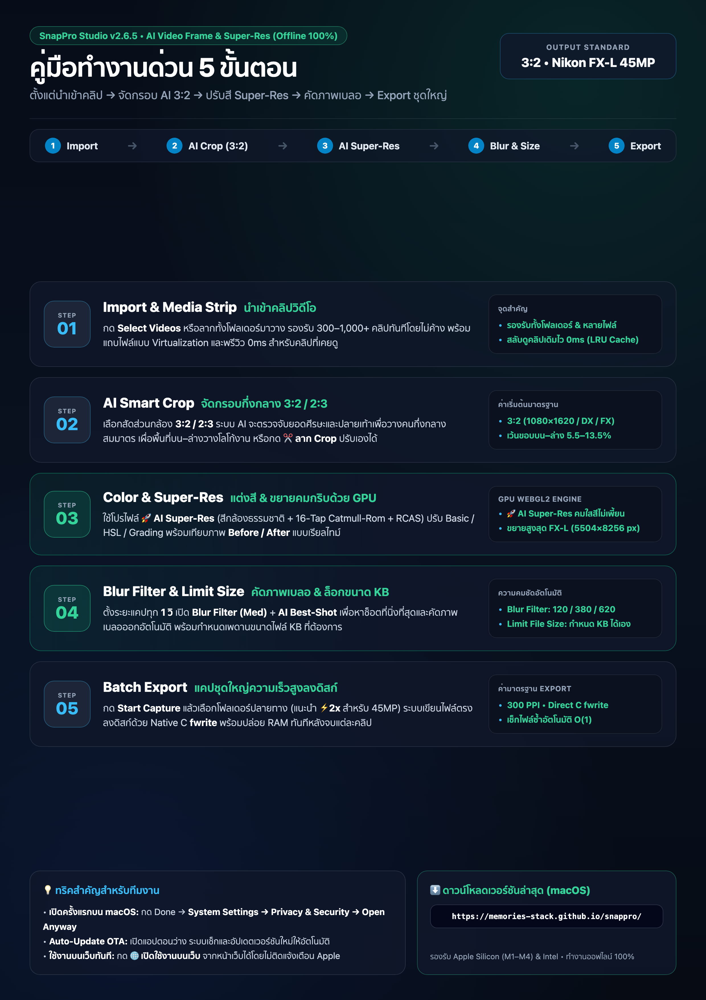

AI Full-Body Symmetric Crop (3:2 / 2:3)
ตรวจจับใบหน้า เส้นผม หมวก และปลายรองเท้า แล้วจัดวางตัวแบบกึ่งกลางบน–ล่างสมมาตร พร้อมเผื่อพื้นที่วางโลโก้งานอีเวนต์ให้อัตโนมัติ
สตูดิโอแคปภาพจากวิดีโอความละเอียดสูง ปรับสี แต่งภาพ คัดภาพเบลออัตโนมัติ จัดเฟรมเต็มตัวสมมาตร 3:2 / 2:3 และขยายความคมชัด 16-Tap WebGL2 Super-Resolution สูงสุด Nikon FX-L (5504×8256 px) ออฟไลน์ 100%
ดูขั้นตอนตั้งแต่โยนวิดีโอ คัดช็อตคม ขยายภาพ 45.4MP จนส่งออกไฟล์พร้อมส่งลูกค้า

ประมวลผลด้วย WebGL2 GPU บนเครื่อง Mac ของคุณโดยตรง ไม่มีอัปโหลดไฟล์ขึ้นเซิร์ฟเวอร์
ตรวจจับใบหน้า เส้นผม หมวก และปลายรองเท้า แล้วจัดวางตัวแบบกึ่งกลางบน–ล่างสมมาตร พร้อมเผื่อพื้นที่วางโลโก้งานอีเวนต์ให้อัตโนมัติ
ขยายภาพจากวิดีโอ 1080p เป็น Nikon DX / FX-L (5504×8256 px) ด้วย WebGL2 พร้อมระบบถนอมสีผิวให้เป็นธรรมชาติและลด Noise ฉากหลัง
วิเคราะห์ความคมชัดทุกวินาที ควานหาช็อตที่นิ่งที่สุดและคัดภาพเบลอออกจากชุดงานโดยอัตโนมัติ
แจ้งเตือนและอัปเดตเวอร์ชันใหม่ให้อัตโนมัติภายในตัวแอปทันที ไม่ต้องดาวน์โหลดตัวติดตั้งใหม่ซ้ำ
ทำงานในเครื่อง 100% ล็อคพอร์ตภายในและอัปเดตเฉพาะช่องทางทางการ ไม่มีอัปโหลดวิดีโอขึ้นคลาวด์
ไฟล์ติดตั้ง Universal ใช้ได้ทั้ง Apple Silicon (M1–M4) และ Intel Mac หรือเปิดใช้งานผ่านเว็บได้ทันที
ดาวน์โหลด SnapPro-Installer.dmg (แนะนำ)